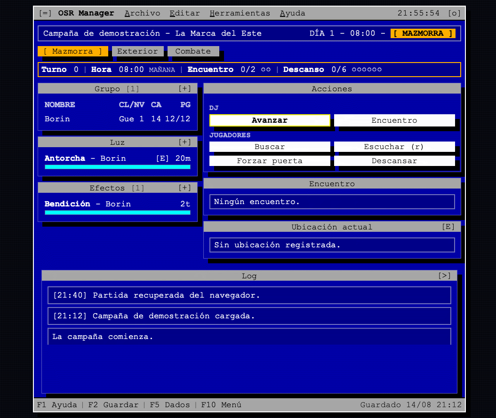

SIN INSTALAR
██████╗ ███████╗██████╗ ██╔═══██╗██╔════╝██╔══██╗ ██║ ██║███████╗██████╔╝ ██║ ██║╚════██║██╔══██╗ ╚██████╔╝███████║██║ ██║ ╚═════╝ ╚══════╝╚═╝ ╚═╝
OSR MANAGER
Herramienta para directores de juego
Una ayuda de mesa para dirigir partidas OSR.
Exploración, hexcrawl, encuentros y combate sin convertir la partida en un VTT.
Código fuente en GitHub → Portable · Sin instalación · Funciona offline

Mazmorra
Turnos, luz, efectos y encuentros.
Exterior
Hexcrawl, viajes, clima y recursos.
Combate
Iniciativa, rondas, PG y estados.
Hecho para acompañar tus libros, dados, fichas y mapas, no para sustituirlos.
Menos gestión. Más partida.
Herramientas
- Dados — expresiones tipo 2d6+1d4+3, comparaciones, d%, d66.
- PX — calculadora rápida de experiencia.
- Statblocks — importa monstruos y PNJ desde texto (OSE, La Marca del Este), revisión manual antes de guardar.
- Codex — biblioteca de Monstruos, PNJ y Encuentros: Biblioteca global del navegador + contenido de la campaña actual, sin duplicar.
- Reglas — perfiles de sistema (Marca del Este, OSE, B/X, BECMI, LotFP, OD&D, AD&D 1e) que ajustan turno, iniciativa y CA.
- Exportar / Importar — guarda la campaña como JSON, muévela entre ordenadores o entre la versión online y la portable.
- Temas — 6 paletas de color para la interfaz (EGA Azul, DOS Ámbar, Terminal Verde, Monocromo, CGA Retro, Fósforo Verde).
Portable
Sin cuenta · Sin instalación · Funciona offline
Para ejecutarlo en tu ordenador:
- Descarga osr-manager.zip (última versión)
- Descomprime el archivo
- Abre
index.html(doble clic)
Guardado:
Local en el navegador. La versión portable y la online son orígenes distintos y no comparten campañas — usa Exportar/Importar (menú Archivo) para mover una entre ellas.
¿Te resulta útil?
OSR Manager es gratuito. Si quieres apoyar su desarrollo: